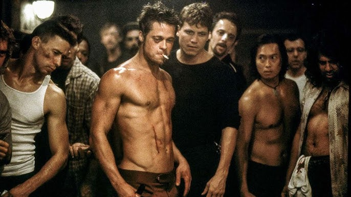

Sinopsis

El protagonista de la historia no tiene nombre, simplemente se lo llama "El Narrador". Trabaja en una empresa de autos haciendo evaluaciones de riesgo y vive solo en un departamento lleno de muebles de catalogo. Sufre de insomnio hace meses y no encuentra sentido en nada de lo que hace.
Para lidiar con el vacio, empieza a ir a grupos de apoyo de enfermedades que el no tiene (cancer de testiculo, tuberculosis, etc). Ahi encuentra que llorar con desconocidos le ayuda a dormir. Todo cambia cuando aparece Marla Singer, una mujer que tambien va a esos grupos sin estar enferma, y que lo saca de ese equilibrio.
En un viaje de trabajo conoce a Tyler Durden, un vendedor de jabon extravagante con una filosofia de vida muy particular. Cuando el departamento del narrador explota, se va a vivir con Tyler a una casa abandonada. Ahi surge la idea del Club de la Pelea: un lugar donde los hombres van a pelear para sentirse vivos.
El club crece rapidamente y se convierte en algo mucho mas grande y peligroso llamado Proyecto Mayhem, cuyo objetivo es destruir el sistema financiero. La pelicula termina con un giro que cambia todo lo que creiamos entender de la historia.
Banda sonora
La banda sonora fue compuesta por The Dust Brothers. Aca podes escuchar una de las pistas mas representativas:
Contexto e impacto
Fight Club se estreno el 15 de octubre de 1999. Fue un momento muy especifico de la cultura occidental: fin del milenio, el consumismo en su punto mas alto, y una generacion de hombres jovenes que se sentia perdida sin un proposito claro.
La pelicula fue muy polémica cuando salio. Muchos criticos dijeron que glorificaba la violencia. El propio estudio (20th Century Fox) no estaba seguro de haberla lanzado. Sin embargo con el tiempo fue reconocida como una obra importante del cine moderno.
Hoy en dia esta en el puesto 10 de las mejores peliculas segun IMDb con mas de 2 millones de votos. Se convirtio en pelicula de culto gracias principalmente a las ventas de DVD, que superaron ampliamente lo que recaudo en cines.
"No sos tu trabajo, no sos cuanto dinero tenes en el banco, no sos el auto que manejas." — Tyler Durden
Locaciones
La pelicula esta ambientada en una ciudad sin nombre de Estados Unidos, pero fue filmada principalmente en Los Angeles, California.
Algunos lugares reales que se usaron para filmar son el estacionamiento del aeropuerto LAX y zonas industriales en desuso que le daban ese aspecto sucio y decadente que buscaba Fincher.
Los interiores importantes, como el sotano del bar y la casa de Paper Street, fueron sets construidos en los estudios de 20th Century Fox.
Director y Guionista
David Fincher dirigio la pelicula despues del exito de Se7en (1995). Es conocido por ser muy detallista y exigir muchas tomas de cada escena. Con Fight Club consolido su estilo: paleta oscura, camara inquieta, narrativa compleja.
Jim Uhls escribio el guion adaptando la novela de Chuck Palahniuk. Segun cuentan, fue elegido despues de mandar una carta explicando por que el era la persona indicada para adaptar ese libro. El resultado es uno de los guiones mas citados de los años 90.